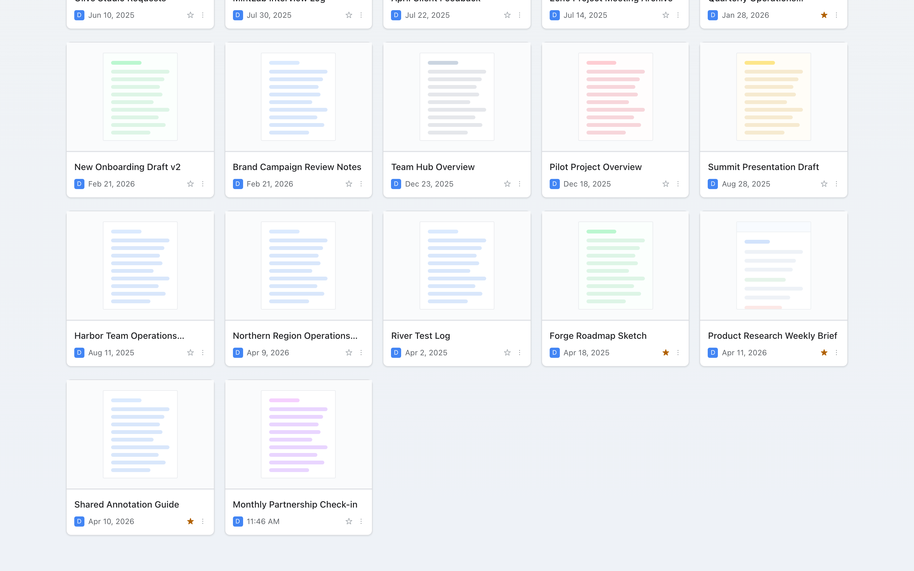
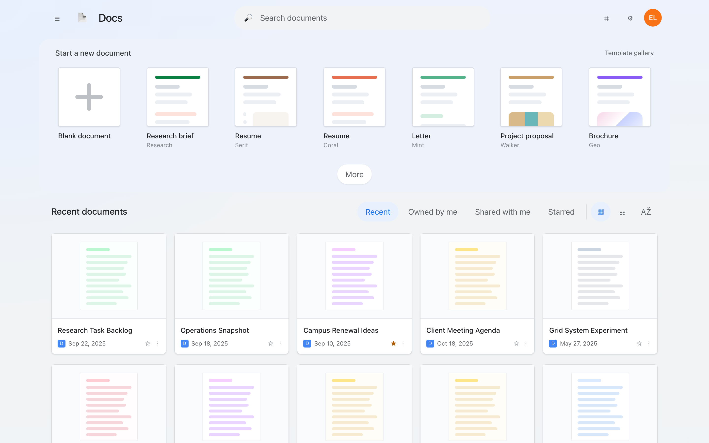
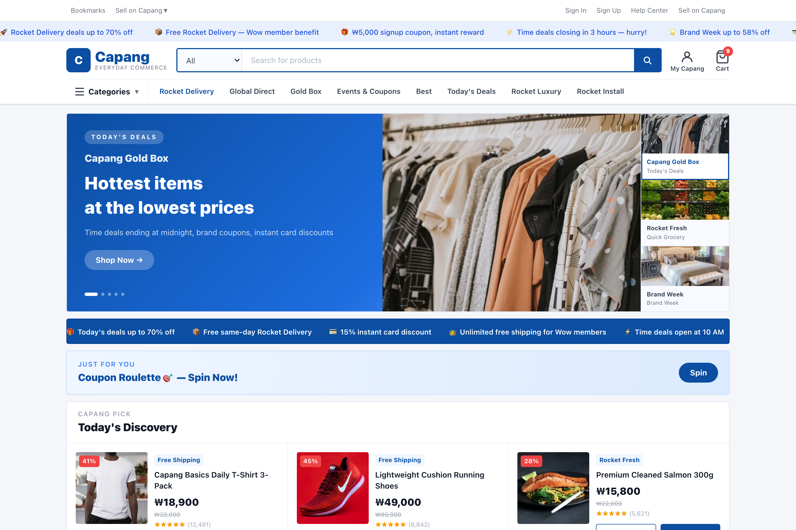
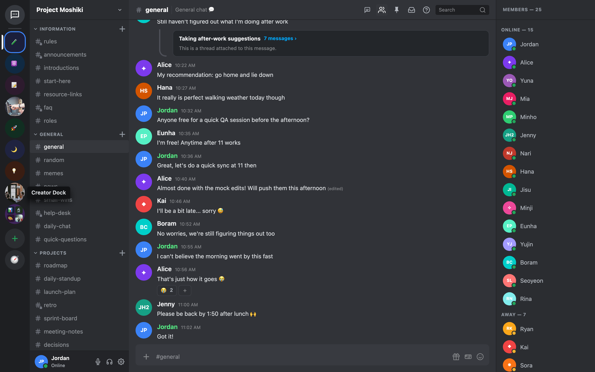
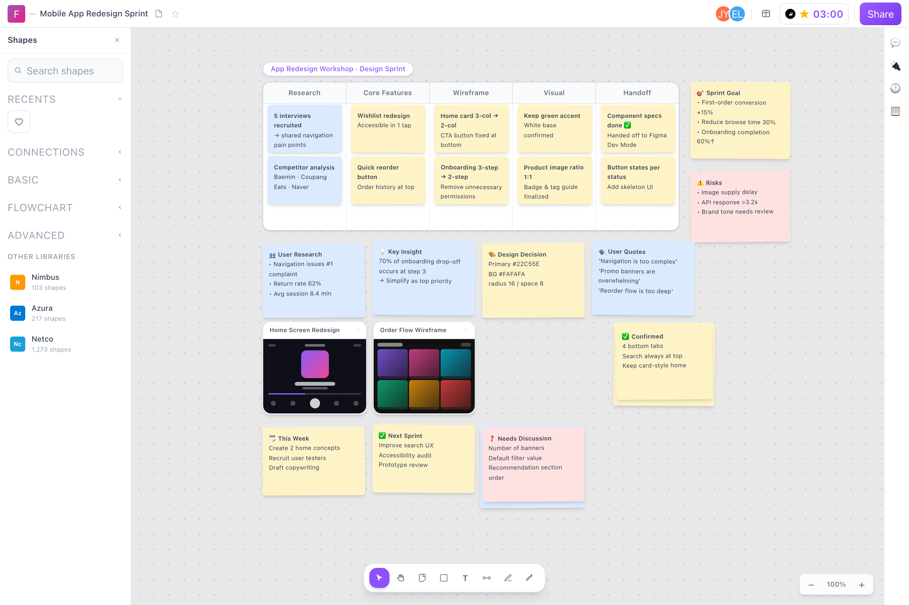

Scroll
{ "x", "y", "dy" }Explore a specific scrollable region beyond the current viewport.
Grounding should not stop when the target is hidden. IGG-Bench measures whether screenshot-only GUI agents can reveal a target through minimal interaction—and then click the right element.

Target hidden
Target visibleThe missing middle
Static GUI grounding assumes the requested element is already visible. Real interfaces break that assumption: targets live below the fold, inside collapsed panels, behind overlays, or in states that have not appeared yet.
IGG preserves grounding's precise objective—locating one target—while adding the minimum interaction required to make that target observable. Each click is checked online against the target element in the current UI state.
A controlled action space
At every turn, an agent emits exactly one JSON action from a compact interaction contract.
{ "x", "y", "dy" }Explore a specific scrollable region beyond the current viewport.
{ "x", "y" }Reveal hover states, tooltips, and otherwise ambiguous controls.
{ "startX" … "endY" }Reposition an occluder or operate a continuous spatial control.
{ "ms" }Handle asynchronous updates and time-dependent visibility.
{ "x", "y" }Ground the target. A correct click ends the task immediately.
Visibility constraints
The target exists in the current UI state but lies outside the visible region.

The target becomes identifiable only after a hover, expansion, tab switch, or occlusion-clearing action.

The target depends on an asynchronous event, automatic transition, or continuous drag.

Dynamic evaluation
The agent receives an instruction, current screenshot, and interaction trace.
One action changes the executable mock environment.
Every click is matched online against the target's stable element ID.
Main benchmark results
Humans solve nearly all tasks, while strong open-source VLM agents remain near 30% grounding accuracy. When the required reveal interactions are completed for Qwen3-VL, accuracy jumps from 30.8% to 81.9%.
Grounding Accuracy (GA) on all 601 tasks · 8-action budget
Qwen3-VL improves from 30.8% to 81.9% when visibility-recovery actions are completed before its final click.
All evaluated open-source models struggle when a target must be recovered by spatial manipulation.
Diagnostic training raises Qwen3-VL from 40.0% to 59.2% on the held-out 120-task validation split.
Broad interface coverage
Controlled replicas span communication, productivity, media, development, and commerce interfaces.
Citation
Please cite our EMNLP 2026 paper. The proceedings identifier will be added after publication.
@inproceedings{iggbench2026,
author = {Kim, Kyeongseon and Son, Jiyeon and Oh, Tae-Hyun},
title = {IGG: A Benchmark for Interactive GUI Grounding
under Visibility Constraints},
booktitle = {EMNLP},
year = {2026}
}